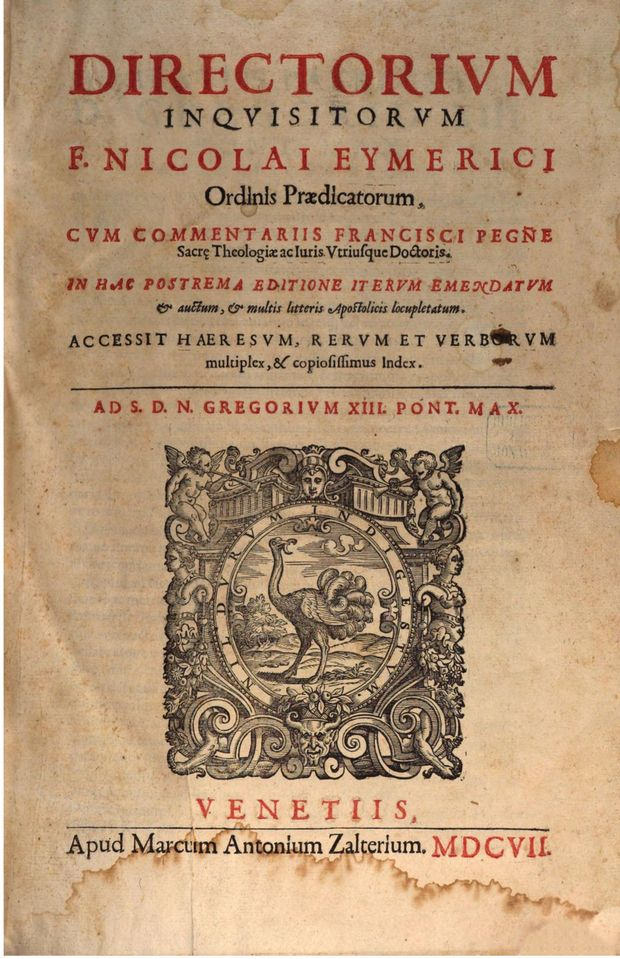
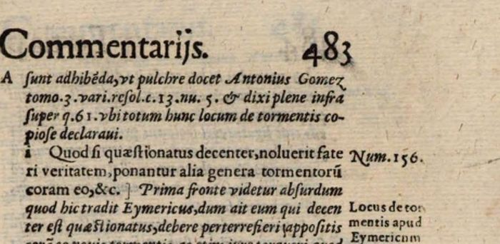
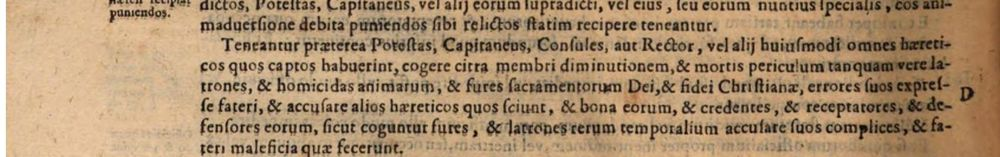

The priest in the flames (Part III, p. 516)

Latin: p. 516, scan, left column. Peña’s margin note: “Hoc narrat Eymericus supra par. 2. q. xj.” Highlighted: Lecky’s words.
And in fact it so happened in Catalonia, in the city of Barcelona, where there were three heretics, as impenitent but not relapsed, handed over to the secular arm; and when one of them, who was a priest, had been exposed to the fire, and was already somewhat scorched on one side, he cried out that he should be taken out, because he wished to abjure, and he repented, and so it was done: whether well or ill, I do not know: one thing I know, that after fourteen years he was accused, and found to have remained continually in heresy, and to have infected many, and he would not be converted, but as impenitent and relapsed he was again left to the secular arm and consumed by fire.
Original Latin
Et facto sic contingit in Cathalonia in civitate Barchinon, ubi fuerunt tres hæretici ut impœnitentes, sed non relapsi, traditi brachio sæculari; et cum unus eorum, qui erat sacerdos, fuisset igni expositus, et ex uno latere jam aliqualiter adustus, clamavit quod educeretur, quia volebat abjurare, et pœnitebat, et sic factum est: verum si bene vel male, nescio: unum scio quod post quatuordecim annos accusatus, inventus est in hæresi permansisse continue, et multos infecisse, nec converti voluit, sed ut impœnitens et relapsus iterum est relictus brachio sæculari, et ignibus consumatus.
Lecky’s quotation opens “In Cathalonia, in civitate Barchinon, fuerunt tres hæretici”, dropping the print’s “Et facto sic contingit” and “ubi”; from “ut impœnitentes” to “nescio” it follows the print. He then stops, dropping the fourteen-year sequel. His remark that burning at the stake gave the victim more time for repentance is his own; Eymericus’s point is different, as above.
Continuing, not repeating, torture (Part III, p. 481)
Latin: p. 481, right column, scan.
… other kinds of torments are to be set before him, saying that he must pass through them all unless he reveals the truth: and if not even so, a second or a third day may be assigned, for terror or even for the truth, to continue the torments, not to repeat them: for they ought not to be repeated unless new evidence emerges against him; for then they may be; but to be continued they are not forbidden.
Original Latin
… ponantur alia genera tormentorum coram eo, dicendo quod oportet eum transire per omnia, nisi prodat veritatem: quod si nec sic, poterit ad terrorem vel etiam ad veritatem, secunda dies, vel tertia assignari, ad continuandum tormenta non ad iterandum: quia iterari non debent, nisi novis supervenientibus indiciis contra eum; quia tunc possunt; sed continuari non prohibentur.
Lecky’s Latin begins: “Si quaestionatus decenter noluerit fateri veritatem… poterit ad terrorem…”. The words “Si quaestionatus decenter noluerit fateri veritatem” are not at this place in the print (the preceding sentence runs “Quod si fateri noluerit, ponatur alia genera tormentorum coram eo”); the ellipsis in Lecky’s quotation covers the difference. Everything he quotes after the ellipsis is exact.

Lecky’s opening words are on p. 483 (scan), as the lemma of Peña’s commentary (note “i”, margin “Num. 156”), which quotes Eymeric as: “Quod si quæstionatus decenter, noluerit fateri veritatem, ponantur alia genera tormentorum coram eo, &c.” (“But if, having been duly questioned, he will not confess the truth, let other kinds of torments be set before him, etc.”). So Lecky’s quotation joins the wording of Peña’s lemma to the text of Eymeric’s rule; perhaps the edition he used read so in the text itself. Peña goes on to say that the passage seems at first sight absurd and unjust (“Prima fronte videtur absurdum … quod est iniquum”), since a man who has been duly tortured has overcome the torments and should be freed, and explains it as allowing the torture of the first day to be continued. (Located in October 2026 by searching the OCR for “decenter”, after a full-text hunt by Meta’s Muse Spark model missed this part of the book because of server errors; read on the page image.)
The torture clause of the papal constitutions (appendix, p. 50)
Latin: appendix of papal letters (running title “Litteræ Apostolicæ pro Officio Sanctissimæ Inquisitionis”), separately paged, p. 50, scan; margin: “Capti hæretici iudicibus ecclesiasticis præsententur”. Lecky (note 41) quotes this clause as the opening of a bull of Innocent IV. Found in October 2026 by a full-text search of the OCR by Meta’s Muse Spark model, then read on the page image. Highlighted: the words Lecky quotes.

Let the podestà, captain, consuls or ruler, or others of the kind, be bound, moreover, to compel all heretics whom they hold captive, short of loss of limb and danger of death, as being truly robbers and murderers of souls and thieves of the sacraments of God and of the Christian faith, to confess their errors expressly and to accuse other heretics whom they know, and their goods, and their believers, harbourers and defenders, just as thieves and robbers of temporal things are compelled to accuse their accomplices and confess the crimes they have done.
Original Latin
Teneantur prætereà Potestas, Capitaneus, Consules, aut Rector, vel alii huiusmodi omnes hæreticos quos captos habuerint, cogere citra membri diminutionem, et mortis periculum tanquam vere latrones, et homicidas animarum, et fures sacramentorum Dei, et fidei Christianæ, errores suos expresse fateri, et accusare alios hæreticos quos sciunt, et bona eorum, et credentes, et receptatores, et defensores eorum, sicut coguntur fures, et latrones rerum temporalium accusare suos complices, et fateri maleficia quæ fecerunt.
Lecky’s Latin is shorter and in the singular: “Teneatur præterea potestas seu rector omnes hæreticos quos captos habuerit …”. This printing has a fuller list of magistrates in the plural and continues past Lecky’s full stop. The clause is not the opening of a bull here but stands in the middle of a series of constitutions against heretics. An editorial note a few pages earlier in this appendix says that Innocent IV (1253), Alexander IV (1258) and Clement IV (1265) confirmed such laws, and the appendix prints a bull of Clement IV beginning “Ad extirpanda”. I have not worked out from the headings which of these documents p. 50 belongs to, so Lecky’s attribution to Innocent IV is not checked here; the singular wording he gives may come from another text of the constitutions.
Sentence on the relapsed heretic (Part III, about p. 520)
Latin: image n555, left column, in the sentence pronounced against a relapsed heretic.
… but you, given over to a reprobate mind, led and misled together by the evil spirit, have chosen to be tormented by dire and perpetual torments in hell, and to be physically consumed here by temporal fires, rather than, adhering to sounder counsel, to draw back from damnable and pestilent errors, and fly to the bosom and mercy of holy mother Church. …
Original Latin
… sed tu in reprobum sensum datus, maligno spiritu ductus pariter & seductus, præelegisti torqueri diris, & perpetuis cruciatibus in infernum, & hic temporalibus ignibus corporaliter consumari, quam adhærendo consilio saniori, ab erroribus damnabilibus ac pestiferis resilire, & ad gremium ac misericordiam sanctæ matris Ecclesiæ advolare. …
Lecky’s note 42 gives this accurately (“Tu in reprobum sensum datus … resilire”, from “sed tu”), with a reference to p. 337 of his edition. Lecky calls it “part of the sentence pronounced upon the relapsed heretic”; the page shows it is in Eymericus’s form for a relapsed heretic, and I did not check this reading against the whole form.
Backlinks
Every place in Rationalism in Europe that links to this page (generated automatically when the site is built).